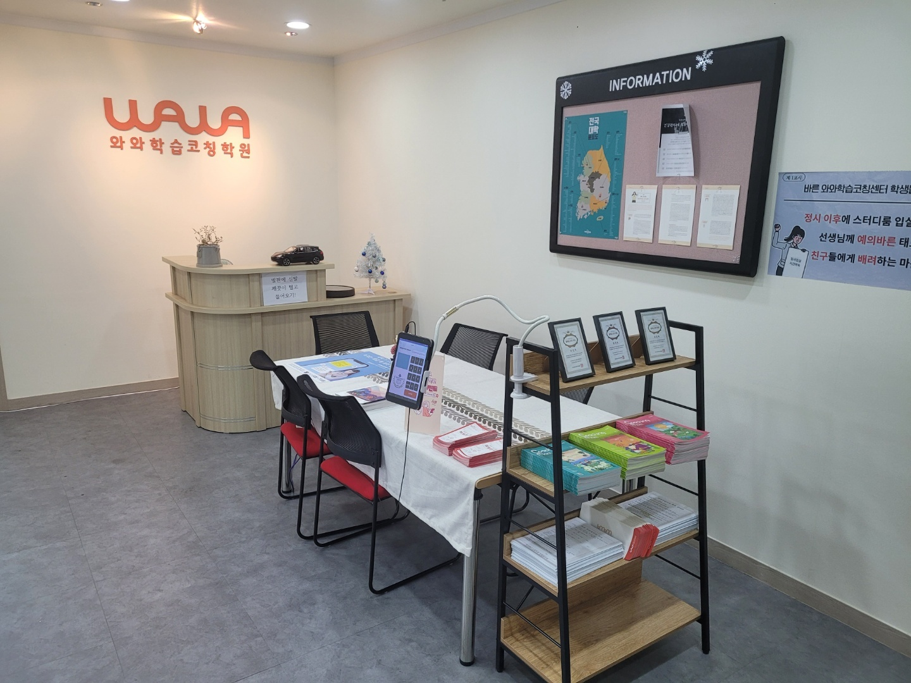
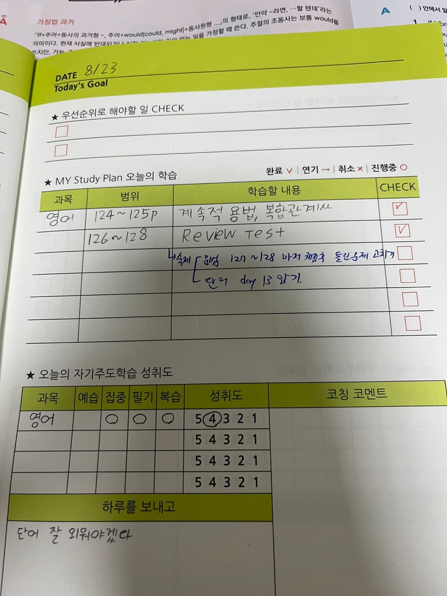

인천광역시 부평구 충선로에 있는 삼산중학교(삼산중)는 2005년 3월에 문을 연 공립 중학교입니다. 교훈은 ‘큰 마음, 바른 실천’입니다. 인천굴포초등학교·인천진산초등학교·인천영선초등학교를 졸업한 아이들이 이 학교에서 만나고, 졸업한 뒤에는 인천영선고등학교·삼산고등학교 같은 인근 고등학교로 흩어집니다.
삼산중 학부모님들과 상담을 하다 보면 과목 이야기가 꼭 한 번은 국어로 넘어옵니다. 그런데 하시는 말씀이 다른 과목과 결이 다릅니다. 수학은 “어디서 막히는지 모르겠다”인데, 국어는 “뭘 공부해야 하는지 모르겠다”입니다. 아이도 똑같이 말합니다. “국어는 공부할 게 없어요. 읽으면 되는 거 아니에요?”
이 생각이 중학교 국어 점수를 가장 많이 깎습니다. 국어는 공부할 게 없는 과목이 아니라, 공부할 것이 눈에 안 보이는 과목입니다. 수학은 문제집이 범위를 대신 알려 주고 영어는 단어장이 분량을 보여 주는데, 국어는 그런 것이 없어서 손을 놓기 쉽습니다.
2학기 기말고사는 보통 12월 초에서 중순에 치러집니다. 10월 초인 지금 두 달 남짓 남았습니다. 오늘은 국어를 감이 아니라 순서로 공부하는 방법을 정리해 보겠습니다.
국어 내신은 교과서와 수업 필기에서 나옵니다
중학교 국어 내신과 수능 국어는 성격이 거의 반대입니다. 수능 국어는 처음 보는 지문을 시간 안에 읽어 내는 시험이라 ‘범위’가 없습니다. 반면 중학교 국어 내신은 범위가 있는 시험입니다. 그 범위는 교과서에 실린 지문과 작품, 그리고 수업 시간에 선생님이 짚은 내용입니다.
그래서 국어를 잘 보는 아이와 못 보는 아이의 차이가 시험 2주 전에 갈리지 않습니다. 수업 시간에 갈립니다. 국어 선생님이 지문 옆에 “이건 중요하다”고 말한 한 줄, 칠판에 적어 준 표현법 이름, 작품의 화자가 누구인지 짚어 준 설명이 그대로 문제가 됩니다. 수학은 수업을 놓쳐도 문제집으로 메울 수 있지만, 국어는 메울 교재 자체가 없습니다. 선생님이 무엇을 강조했는지는 어느 문제집에도 안 적혀 있습니다.
부모님께서 지금 확인하실 것은 딱 하나입니다. 아이 국어 교과서를 펴 보세요. 지문 옆이 깨끗하면 국어 공부가 아직 시작되지 않은 것입니다. 밑줄과 메모가 들쭉날쭉하게라도 있으면 출발선에는 서 있는 것입니다. 국어 문제집을 몇 권 샀는지보다 이 한 번의 확인이 정확합니다.
문제집을 더 사 주기 전에 이것부터 시키셔도 됩니다. 교과서에 있는 지문을 혼자 다시 읽고, 각 문단 옆에 한 줄로 무슨 이야기인지 적게 하는 것입니다. 한 지문에 10분이면 됩니다. 국어 내신에서 가장 효율이 높은 공부인데, 눈에 띄는 분량이 안 남아서 아이들이 가장 먼저 건너뜁니다.
비문학은 읽는 순서가 있습니다
비문학(독서) 지문에서 아이들이 틀리는 이유는 어려운 낱말 때문이 아닌 경우가 많습니다. 글을 한 덩어리로 읽어서 그렇습니다. 처음부터 끝까지 똑같은 속도로 읽고 나면 머릿속에 남는 것이 “뭔가 읽었다”뿐이고, 선택지로 갔다가 다시 지문을 뒤지게 됩니다. 시간이 모자란 이유가 여기 있습니다.
저희가 아이들에게 시키는 순서는 이렇습니다.
- 첫 문단에서 무엇에 대한 글인지 한 단어로 정합니다. 주제어를 못 고르면 그 뒤는 전부 흐릿해집니다.
- 문단이 끝날 때마다 한 줄로 요약합니다. 처음에는 연필로 지문 옆에 쓰고, 익숙해지면 머릿속으로 합니다.
- ‘그러나’·‘따라서’·‘반면’에 동그라미를 칩니다. 글의 방향이 꺾이는 자리이고, 문제는 그 자리에서 가장 많이 나옵니다.
- 숫자·연도·사람 이름에는 네모를 칩니다. 세부 내용을 묻는 문제가 거의 여기서 나옵니다.
- 다 읽고 나서 선택지로 갑니다. 선택지를 먼저 보고 지문을 뒤지는 습관은 중학교에서는 당장 점수가 나와도 고등학교에서 반드시 막힙니다.
이걸 하루에 지문 하나씩 두 달이면 60개입니다. 많아 보이지만 한 지문에 15분이면 됩니다. 국어는 이렇게 적은 분량을 매일 하는 쪽이 몰아서 하는 것보다 훨씬 잘 먹히는 과목입니다. 읽는 속도는 벼락치기로 안 늘기 때문입니다.
문학은 작품마다 한 장으로 정리합니다
문학은 비문학과 공부법이 다릅니다. 범위에 들어 있는 작품의 수가 정해져 있으니 작품 하나하나를 끝내는 방식이 맞습니다. 그런데 아이들은 보통 자습서 설명을 눈으로 읽고 덮습니다. 그러면 시험장에서 작품 제목은 익숙한데 묻는 것에는 답을 못 합니다.
작품 하나를 A4 한 장으로 정리하게 하면 달라집니다. 칸은 다섯 개면 충분합니다.
- 말하는 사람이 누구인가 — 시는 화자, 소설은 서술자입니다. 1인칭인지 3인칭인지까지 적게 합니다.
- 어떤 상황인가 — 한 줄로. 언제, 어디서, 누가 등장하는지.
- 어떤 마음인가 — 그리움·원망·반성처럼 낱말 두세 개로.
- 눈에 띄는 표현 — 비유·반복·대조·반어 같은 것을 작품에서 직접 찾아 쓰게 합니다. 표현법 이름을 외우는 게 아니라 이 작품의 몇째 줄이 그것인지를 적는 것이 중요합니다.
- 주제 한 줄 — 아이 말로. 자습서 문장을 베끼면 남지 않습니다.
한 작품에 20분이면 씁니다. 범위에 작품이 여섯 개면 두 시간입니다. 그 두 시간이 자습서를 세 번 읽는 것보다 점수에 가깝습니다. 내 말로 한 번 쓴 것만 시험장에서 꺼내 쓸 수 있습니다.

서술형은 아는 것을 쓰는 일이 아니라 조건을 맞추는 일입니다
국어 서술형에서 아이들이 가장 억울해하는 자리가 여기입니다. 내용은 맞게 썼는데 감점이 됩니다. 이유는 거의 같습니다. 문제가 요구한 조건을 안 지켰기 때문입니다.
서술형 문제에는 조건이 숨어 있지 않고 대놓고 적혀 있습니다. ‘두 문장으로’, ‘~라는 표현을 사용하여’, ‘지문에서 찾아’, ‘~때문이다로 끝맺어’. 그런데 아이들은 묻는 내용만 읽고 조건은 눈으로 흘립니다. 내용을 알아서 손이 먼저 나가기 때문입니다.
그래서 저희는 서술형을 풀 때 순서를 바꾸게 합니다. 답을 쓰기 전에 조건에 동그라미를 치고, 다 쓴 뒤 그 동그라미를 하나씩 지워 가며 확인하게 합니다. 이것만으로 서술형 점수가 달라지는 아이가 많습니다. 실력이 늘어서가 아니라 원래 알던 것을 잃지 않게 돼서입니다.
한 가지 더 있습니다. 서술형은 글씨와 띄어쓰기도 점수입니다. 지저분해서 못 읽으면 맞는 답도 맞는지 알 수 없습니다. 아이가 서술형에서 유독 점수를 잃는다면 답안을 소리 내어 읽어 보게 해 보세요. 문장이 끊기거나 주어와 서술어가 안 맞는 자리가 바로 들립니다.
수행평가를 빼고 국어 점수를 계산할 수 없습니다
국어는 수행평가의 비중이 큰 과목입니다. 발표, 독서 기록, 글쓰기, 토론처럼 여러 형태로 나옵니다. 그런데 수행평가에서 점수가 깎이는 이유는 실력이 아니라 거의 다 기한과 조건입니다. 제출일을 넘기거나, 분량을 안 맞추거나, 안내된 형식을 안 지키는 것입니다.
중간·기말 지필 점수를 올리는 데는 두 달이 들지만, 수행평가에서 잃는 점수는 며칠 안에 사라집니다. 그래서 저희는 아이들 플래너에 과목별 수행평가 일정을 따로 적게 합니다. 안내받은 날 바로 적고, 제출일 기준으로 역산해 언제 시작할지를 같이 정합니다.
※ 삼산중학교의 실제 수행평가 과제와 반영 비율, 평가 기준은 학년·과목·연도에 따라 다릅니다. 이 글에 적지 않았으니 학교에서 나눠 주는 평가 계획에서 확인해 주세요.
기출 분석은 남의 시험지를 구해 오는 일이 아닙니다
‘기출 분석’이라는 말을 들으면 보통 지난 시험지를 어디서 구할까를 먼저 생각하십니다. 그런데 가장 쓸모 있는 기출은 이미 집에 있습니다. 아이가 본 지난 시험지입니다.
그 시험지로 볼 것은 몇 점을 받았는지가 아닙니다.
- 문항이 교과서 어디서 나왔는가. 지문 자체인지, 학습활동인지, 선생님이 덧붙인 설명인지. 이것이 다음 시험을 준비할 자리를 알려 줍니다.
- 어떤 유형에서 틀렸는가. 내용 확인인지, 표현법인지, 어휘·어법인지, 서술형인지. 국어는 유형별로 공부법이 완전히 다릅니다.
- 시간이 모자랐는가. 뒷번호가 비어 있거나 급히 쓴 글씨면 실력이 아니라 읽는 속도 문제입니다.
이렇게 보면 이번 시험에 쓸 결론이 두세 줄 나옵니다. 남의 학교 시험지를 열 장 모으는 것보다 내 아이 시험지 한 장을 이렇게 읽는 편이 훨씬 정확합니다. 다만 출제 범위와 서술형 비중, 사용하는 교과서는 학교와 학년·연도마다 다릅니다. 이 글에서 삼산중의 실제 출제 경향을 숫자로 단정하지 않는 이유입니다.
학년별로 지금 손댈 곳이 다릅니다
- 중1 — 아직 등급 경쟁보다 읽는 힘을 쌓을 시기입니다. 교과서 지문을 문단별로 한 줄 요약하는 습관, 모르는 낱말을 그냥 넘기지 않는 습관 두 개면 충분합니다. 국어는 이 시기에 생긴 차이가 고등학교까지 따라갑니다.
- 중2 — 문학 작품 정리와 서술형이 본격적으로 점수를 가릅니다. 작품마다 한 장 정리를 시작하고, 서술형 조건 확인을 습관으로 만들 시기입니다.
- 중3 — 중학교에서 받는 마지막 내신입니다. 범위가 길어지니 몰아서가 안 통합니다. 비문학은 매일 한 지문, 문학은 범위 작품을 미리 하나씩 끝내 두는 쪽으로 가야 합니다. 고등학교 국어는 분량이 또 한 단계 늘어납니다.
학년마다 다르지만 공통점이 하나 있습니다. 국어는 시험 2주 전에 시작하면 늦는 과목이라는 것입니다. 수학은 2주로 단원 하나를 메울 수 있지만, 읽는 속도와 요약하는 힘은 2주로 늘지 않습니다.
국어학원·공부방·종합학원과 코칭의 차이
삼산동과 부평구 일대에도 아이를 맡길 곳은 여러 가지가 있습니다. 어느 쪽이 나쁘다는 이야기가 아니라 하는 일이 서로 다릅니다.
- 국어학원 — 국어 하나를 깊게 가르칩니다. 지문 읽는 법과 작품 해석을 체계적으로 짚어 줍니다. 국어 수업 자체가 필요한 아이에게 맞습니다.
- 공부방 — 집 가까이에서 소수 인원을 챙기는 곳이 많습니다. 아이 성향을 잘 봐 주고 오가는 거리가 짧다는 점이 큽니다.
- 종합학원 — 여러 과목을 한곳에서 돌립니다. 이동이 줄고 시험 기간 관리가 한 번에 됩니다. 과목마다 따로 알아볼 여력이 없을 때 편합니다.
- 학습코칭 — 가르치는 일 자체보다 수업과 수업 사이를 봅니다. 배운 것을 집에서 혼자 다시 꺼내 보는 시간, 그걸 언제 어떻게 할지 정하는 일, 안 지켜졌을 때 왜 안 됐는지 같이 찾는 일입니다.
특히 국어에서 이 차이가 크게 납니다. 국어는 수업을 많이 들어서 늘기보다 혼자 읽고 혼자 요약한 양으로 늡니다. 그래서 국어 성적이 안 움직일 때 수업을 하나 더 붙이는 것이 답이 아닌 경우가 많습니다. 아이가 혼자 읽는 시간이 하루에 몇 분인지를 먼저 보셔야 합니다.
와와가 하는 일은 그 몇 분을 만들고 지키게 하는 쪽입니다. 오늘 할 일을 ‘국어 하기’가 아니라 ‘교과서 112~117쪽 문단 요약’처럼 쪽수로 적게 하고, 다음 날 그것이 됐는지 아이와 함께 확인합니다. 가르치는 곳과 겹치지 않고 함께 갈 수 있는 이유입니다.
삼산중학교 가까이 — 와와학습코칭 인천삼산점
삼산중에서 가까운 곳에 와와학습코칭 인천삼산점이 있습니다. 인천 부평구 체육관로 32 하이존빌딩 8층입니다. 삼산동 안에 있어 삼산중·진산중학교·구산중학교 학생들이 걸어서 오고, 인천영선고등학교·삼산고등학교 학생들도 다닙니다.
이 센터에서 삼산중 학생을 보는 방식은 위 사진에 거의 다 들어 있습니다. 상담 공간 벽에는 전국 대학 지도가 붙어 있고, 아이들이 쓰는 플래너에는 과목·범위·할 내용 칸이 나뉘어 있습니다. 중학생에게 대학 지도를 보여 주는 이유는 대학 이름을 외우게 하려는 것이 아니라 목표를 오늘 할 일로 바꿔 보게 하려는 것입니다. 국어는 그 연결이 특히 잘 보이는 과목입니다. 지금 비문학 한 지문을 왜 읽는지가 고등학교와 수능까지 한 줄로 이어지기 때문입니다.
플래너에 국어를 적는 방식도 다른 과목과 다르게 봅니다. 국어는 ‘문제집 몇 쪽’으로만 적으면 아이가 아는 유형만 반복하기 쉬워서 읽기와 정리를 따로 적게 합니다. 비문학 한 지문 요약, 문학 작품 한 장 정리처럼요. 그리고 수행평가 일정은 안내받은 날 바로 적습니다.
인천삼산점에 대한 더 자세한 이야기는 인천 삼산동 인천삼산점 수업현황 글에 담았습니다. 학습 진단과 상담은 무료이니, 아이 지난 국어 시험지와 교과서를 들고 오셔서 “어디서 틀리는 아이인지”부터 같이 보셔도 좋겠습니다.
중학교 국어는 어디로 이어지나
중학교 국어에서 쌓은 것은 고등학교 내신 국어로, 그리고 수능 국어로 이어집니다. 다만 모양이 바뀝니다. 고등학교 내신 국어는 범위가 있는 시험이라 중학교와 비슷하지만 분량이 몇 배로 늘고, 수능 국어는 범위가 없는 시험이라 처음 보는 지문을 시간 안에 읽어 내는 힘만 남습니다. 중학교 때 요약하는 습관을 들인 아이와 그렇지 않은 아이의 차이가 여기서 숨길 수 없게 드러납니다.
학교를 그만두거나 다른 길로 가는 경우에도 국어는 남습니다. 고등학교 졸업학력 검정고시에도 국어가 들어 있고, 어떤 길을 가도 글을 읽고 조건에 맞게 쓰는 일은 계속 요구됩니다. 참고로 2027학년도 수능은 2026년 11월 19일이고, 올해 2학기 기말고사는 보통 12월 초에서 중순입니다.
정리하면
- 국어 내신은 교과서 지문과 수업 필기에서 나옵니다. 아이 교과서가 깨끗하면 거기서부터입니다.
- 비문학은 읽는 순서를 정해 주고 하루 한 지문. 벼락치기가 안 되는 영역입니다.
- 문학은 작품마다 A4 한 장. 자습서를 베끼지 말고 아이 말로 쓰게 합니다.
- 서술형은 조건에 동그라미를 치고, 쓴 뒤 지워 가며 확인합니다.
- 수행평가는 실력보다 기한과 조건입니다. 안내받은 날 바로 적게 하세요.
- 국어는 수업을 늘려서가 아니라 혼자 읽은 양으로 늡니다.
※ 이 글의 학년별·단계별 내용은 일반적인 중학교 국어 교육과정을 바탕으로 한 설명입니다. 삼산중학교의 실제 시험 일정, 출제 범위, 사용 교과서와 부교재, 서술형 반영 비율, 수행평가 과제와 평가 기준, 학년별 진도, 학급 수와 학생 수는 확인하지 못해 이 글에 담지 않았습니다. 학교와 학년·과목·연도에 따라 다르므로 반드시 학교에서 안내하는 학사일정과 평가 계획에서 확인해 주세요. 확인되지 않은 숫자는 기재하지 않았습니다. 이 글의 사진은 와와학습코칭 인천삼산점 센터 사진으로, 삼산중학교를 찍은 것이 아닙니다.
관련 검색어: 삼산중국어 · 삼산중내신 · 삼산중시험대비 · 삼산중학교국어 · 삼산중학교내신